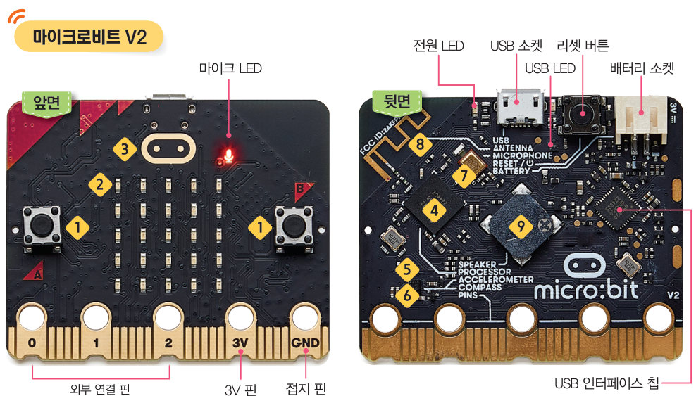
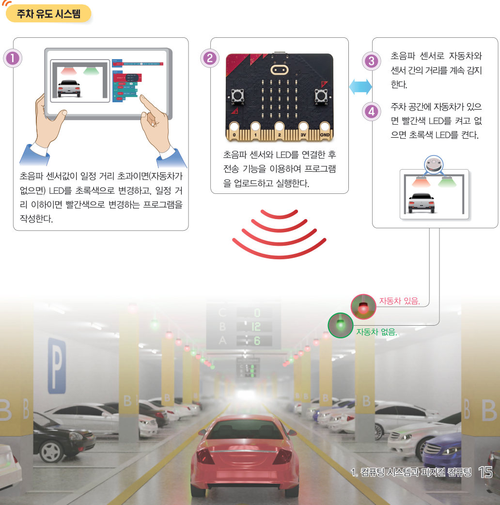

살아있는 교과서 · Ⅰ. 컴퓨팅 시스템 · 1. 컴퓨팅 시스템과 피지컬 컴퓨팅 · 02 13~17쪽
피지컬 컴퓨팅 시스템의 이해
자동문과 손 건조기는 어떻게 사람을 알아볼까? 가상 마이크로비트의 센서와 액추에이터를 하나씩 작동해 보고, 초음파 센서로 빈자리를 알려 주는 가상 주차장에서 기준 거리를 정해 피지컬 컴퓨팅의 입력 → 처리 → 출력 과정을 확인하자.
🎯 학습 목표 — 피지컬 컴퓨팅 시스템의 개념과 동작 원리를 설명하고, 생활 속 사례를 조사하여 그 필요성과 가치를 판단할 수 있다.
교과서피지컬 컴퓨팅 시스템의 개념 13쪽
우리는 주변에서 사람이 다가가면 스스로 열리는 자동문, 손을 대면 바람이 나오는 손 건조기와 같이 외부 환경을 인식하여 작동하는 기기를 쉽게 볼 수 있다. 이처럼 센서로 주변 환경 변화를 감지하고 소프트웨어로 제어하여 외부의 물리적인 환경과 상호 작용하는 장치를 피지컬 컴퓨팅 시스템이라고 한다. (피지컬 컴퓨팅 시스템은 컴퓨팅 시스템의 한 분야이다.)
이 밖에 미세먼지 농도에 따라 세기를 조절하는 공기 청정기, 수분이 부족하면 자동으로 물을 공급하는 스마트 화분, 무선으로 움직임을 조종하는 로봇이나 드론 등도 피지컬 컴퓨팅 시스템의 예이다. 최근에는 기술의 발달에 따라 성능이 향상되고 무선 통신이 활발해지면서 블루투스 스피커, 스마트워치, 스마트 홈 제어 시스템 등으로 피지컬 컴퓨팅의 활용 분야가 넓어지고 있다.
그림 I-2피지컬 컴퓨팅 시스템의 예 — 블루투스 스피커, 스마트 홈 제어 시스템, 드론, 스마트워치, 공기 청정기, 스마트 화분
1각 장치가 감지하는 것(센서)과 하는 일(출력)을 연결해 보자.
자동문
공기 청정기
스마트 화분
손 건조기
교과서피지컬 컴퓨팅 시스템의 구성 요소 14쪽
피지컬 컴퓨팅 시스템은 입력 장치, 처리 장치, 출력 장치로 구성되어 있다. 피지컬 컴퓨팅 시스템의 특징은 센서를 통해 주변 상황을 감지하여 처리한 결과를 빛, 소리, 회전 등을 이용한 물리적인 장치로 현실 세계와 상호 작용하는 것이다. 조작이 쉽고 간편한 마이크로비트(여러 가지 센서와 액추에이터가 포함된 센서 보드)를 중심으로 구성 요소를 살펴보자. (액추에이터: 모터, LED 등 출력 장치)
그림 I-3피지컬 컴퓨팅 시스템의 구성 요소

14쪽마이크로비트 V2 앞면과 뒷면
마이크로비트 탐험번호를 눌러 구성 요소를 살펴보자
번호 버튼을 누르면 가상 마이크로비트에서 그 부품이 어떻게 동작하는지 보여 줘요.
1마이크로비트의 구성 요소를 입력 장치(센서), 출력 장치(액추에이터), 통신 장치로 분류해 보자.
버튼(A, B)
빛 감지 센서(LED 스크린)
터치 센서(로고)
온도 센서
자기 센서
가속도 센서
소리 센서(마이크)
라디오 통신
스피커
LED 스크린(5×5)
교과서피지컬 컴퓨팅 시스템의 동작 원리 — 주차 유도 시스템 15쪽
피지컬 컴퓨팅 시스템은 센서로 데이터가 입력되면 저장된 프로그램으로 처리한 후 그 결과를 출력한다. 이러한 입력 → 처리 → 출력의 과정은 컴퓨팅 시스템의 동작 원리와 비슷하지만, 피지컬 컴퓨팅 시스템은 키보드, 모니터 외에도 센서나 모터 등 다양한 입출력 장치를 사용한다.
고층 건물이나 대형 상가 주차장에는 주차 공간 유무를 알려 주는 주차 유도 시스템이 설치되어 있다. 주차 공간이 없으면 빨간색 전등이 켜지고, 주차 공간이 있으면 초록색 전등이 켜진다. 주차 유도 시스템은 초음파 센서(수 cm~수 m까지 거리를 측정)를 이용해 차량이 있는지 감지하여 전등의 색을 자동으로 변경하는 피지컬 컴퓨팅 시스템의 한 예이다.

15쪽주차 유도 시스템 — ① 프로그램 작성 ② 초음파 센서와 LED 연결 후 업로드 ③ 초음파 센서로 거리를 계속 감지 ④ 자동차가 있으면 빨간색, 없으면 초록색 LED
가상 주차장기준 거리를 정하고 자동차를 움직여 보자
천장의 초음파 센서는 바닥(250 cm)까지의 거리를 재요. 자동차가 들어오면 거리가 짧아져요. 기준 거리보다 가까우면(이하) 빨간색, 멀면(초과) 초록색이에요.
🚗 자동차 위치
📏 기준 거리150 cm
1자동차 지붕까지의 거리가 110 cm일 때 기준 거리를 150 cm로 하면 전등이 켜지고, 기준 거리를 50 cm로 잘못 정하면 자동차가 있어도 전등이 켜진다.
2주차 유도 시스템의 동작을 입력·처리·출력으로 나누어 보자.
초음파 센서로 자동차와 센서 사이의 거리를 감지한다.
거리와 기준 거리를 비교하여 자동차가 있는지 판단한다.
빨간색 또는 초록색 LED를 켠다.
해 보기 · 개별피지컬 컴퓨팅 시스템의 필요성과 가치 판단하기 16쪽
(예) 자동 손 소독제 분사기 — 필요한 장소: 병원, 보건소 등 — 동작 원리: 사람의 손을 인식하면 체온을 측정해 알려 주고, 소독제를 뿌려 준다. (예) 불편한 상황: 용변을 본 후 화장실의 물을 잘 내리지 않는다. → 필요한 시스템: 용변을 본 후 자동으로 물을 내려 주는 피지컬 컴퓨팅 시스템 → 긍정적 영향: 불쾌감을 주지 않는 효과가 있다.
1우리 주변에서 피지컬 컴퓨팅 시스템을 찾아보고, 필요한 상황이나 장소와 동작 원리를 조사해 보자.
2평소에 가정이나 학교에서 불편했던 상황과 이를 해결할 피지컬 컴퓨팅 시스템, 그 시스템이 사회에 미칠 긍정적 영향을 적어 보자.
확인 꼭꼭 · 단원 평가하기피지컬 컴퓨팅 시스템의 이해 40~41쪽
✔옳으면 O, 옳지 않으면 X
03 센서로 주변 환경 변화를 감지하고 소프트웨어로 제어하여 외부의 물리적인 환경과 상호 작용하는 장치를 시스템 소프트웨어라고 한다.
04 센서에는 빛 감지 센서, 온도 센서, 전동기, LED 스크린 등이 있다.
05 초음파 센서를 이용하여 거리를 측정할 수 있다.
04소리 센서를 활용할 수 있는 피지컬 컴퓨팅 장치로 알맞은 것은?
핵심 콕콕 정리하기피지컬 컴퓨팅 시스템의 이해 17쪽
1피지컬 컴퓨팅 시스템의 개념
센서로 주변 환경 변화를 감지하고 소프트웨어로 제어하여 외부의 물리적인 환경과 상호 작용하는 장치를 (이)라고 한다.
2피지컬 컴퓨팅 시스템의 구성 요소와 동작 원리
피지컬 컴퓨팅 시스템은 입력 장치, 처리 장치, 출력 장치로 구성되며, (을)를 통해 주변 상황을 감지하여 처리된 결과를 빛, 소리, 회전 등을 이용한 물리적인 장치로 현실 세계와 상호 작용하는 것이 특징이다.
평가 기준
스스로 평가
컴퓨팅 사고력 피지컬 컴퓨팅 시스템의 구성 요소와 동작 원리를 설명할 수 있는가?
디지털 문화 소양 생활 속 피지컬 컴퓨팅 시스템을 조사하여 필요성과 가치를 판단할 수 있는가?
디지털 문화 소양 불편한 상황을 해결할 피지컬 컴퓨팅 시스템을 제안할 수 있는가?
제출학생 정보 · 제출하기
모든 활동을 마친 뒤 제출하면 전체가 한 번에 채점되고 피드백이 나타나요. 학년을 꼭 적어 주세요 — 답안은 선생님 스프레드시트(내 학년 시트의 정보 탭)에 기록돼요.